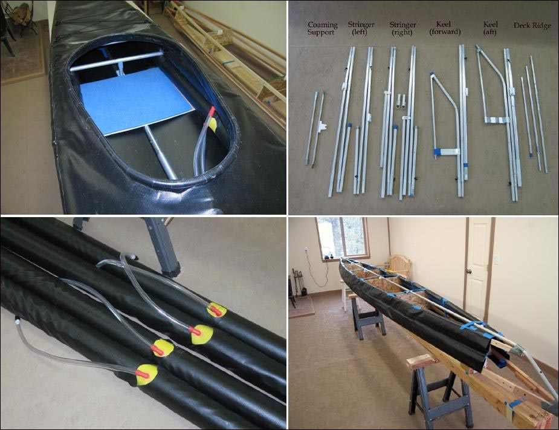

| Sonnet 18 by Tom Yost (US) | Menu Previous Page Next Page |
|

Upper Left - The coaming is 1/2" aluminum tubing. The seat is 3/16 plywood with a 1/2" closed cell foam pad. It slips under the lower sponsons during assembly and is held firmly in place after the sponsons are inflated. The cross braces are 3/4" tubing. They connect to the opposite stringer and keel via HDPE snaps. Upper Right - The 3 stringer frame , deckridge, and coaming supports. Lower Left - The 15' X 3.5" Folbot sponsons are protected by 10oz PVC sleeves. Lower Right - The Wood "Skinning" frame with sponson sleeves and aluminum keel attached prior to skinning. The 10oz PVC sleeves will be glued to the 18oz PVC skin . Both will later be removed from the wood frame. The frame is not part of the finished boat, but can be used to make future skins. The skin is 18oz Coverene, and the sponsons sleeves are 10oz Coverene from Mauritzon. The aluminum tubing is 6063-T832 from Texas Towers. Sponsons are 15' X 3.5" from Folbot. The cost to build the Sonnet 18 was $225.00US. |
|